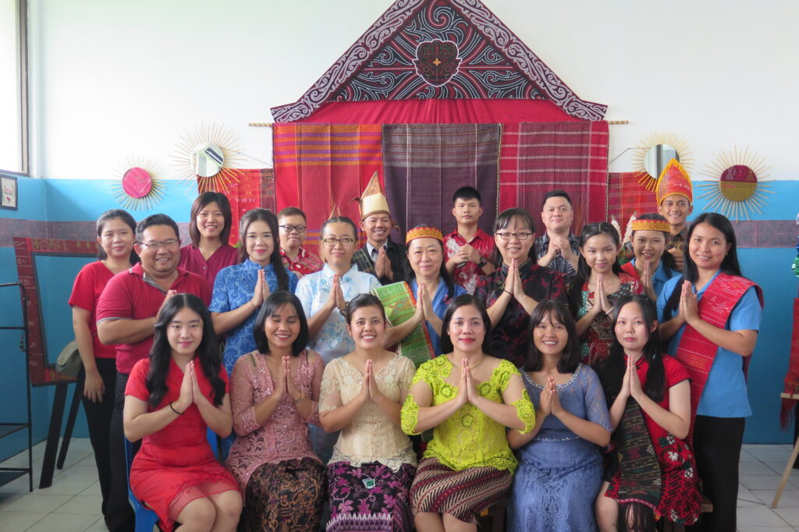
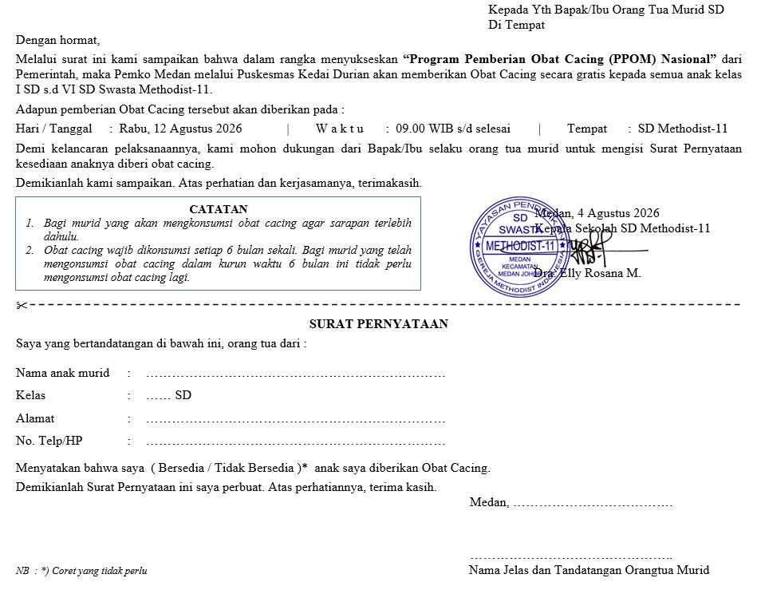
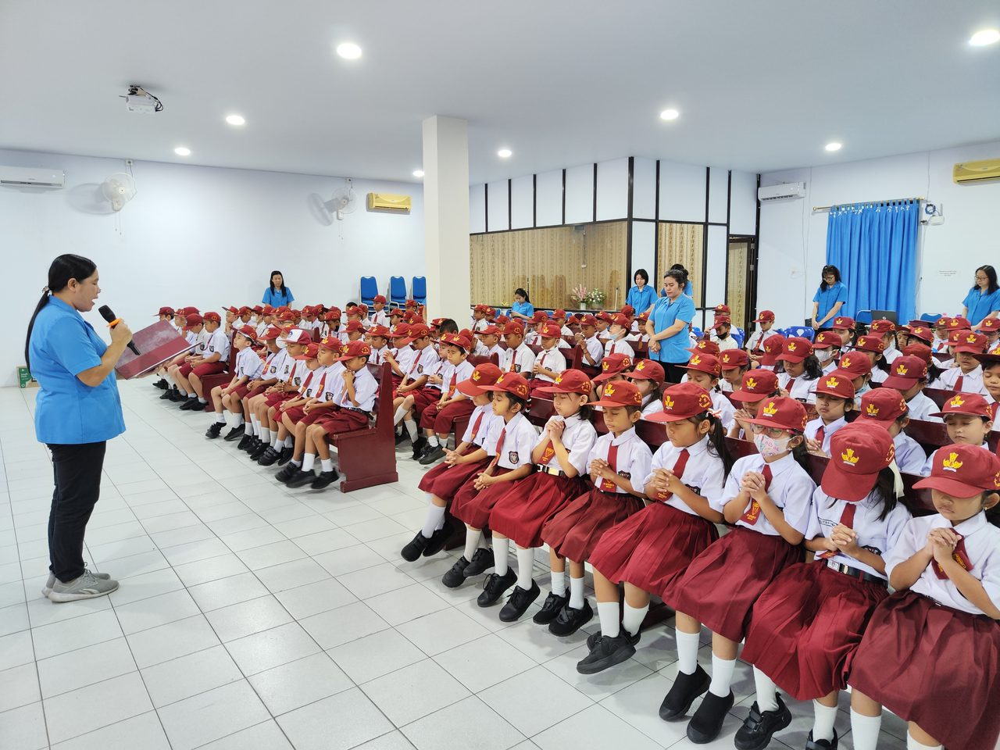
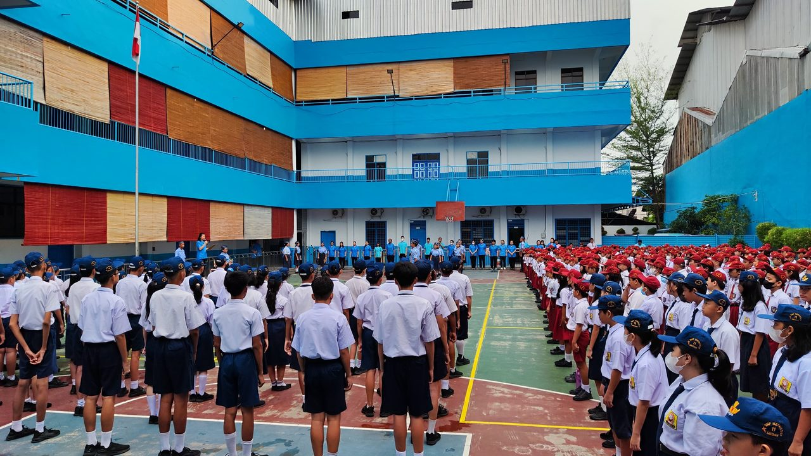

Yayasan Pendidikan Kristen Methodist Titus
Yayasan Pendidikan Kristen Methodist TitusTK-SD-SMP Swasta Methodist-11
Yayasan Pendidikan Kristen Methodist TitusHalo Sobat Methodist! Selamat datang di website resmi Yayasan Pendidikan Kristen Methodist Titus TK-SD-SMP Swasta Methodist-11. Sekolah yang beriman, cerdas, berkarakter, dan berwawasan global.
Info PendaftaranAlasan orang tua memilih kami
Di Methodist 11, biaya sekolah relatif terjangkau dibanding sekolah swasta lain dengan kualitas setara. Sekolah ini memberikan kesempatan yang adil bagi semua siswa.
Guru-guru yang berpengalaman dan peduli membantu siswa berkembang sesuai potensi mereka. Didukung dengan lingkungan belajar yang aman, tertib, dan positif.
Methodist 11 tidak hanya menekankan prestasi akademik. Pendidikan di sini menegaskan akal budi dan rohani siswa, sehingga mereka tidak hanya cerdas secara intelektual, tetapi juga memiliki iman, moral, dan nilai hidup yang kuat.
Fondasi pendidikan kami
Membentuk Peserta Didik yang beriman, cerdas, berkarakter, dan berwawasan global.
Sekolah Methodist-11 memiliki banyak fasilitas guna menunjang kegiatan belajar mengajar

Methodist-11 aktif dalam perlombaan baik tingkat kota maupun Nasional. Kami percaya setiap anak memiliki bakat yang perlu diarahkan, didukung, dan dirayakan.
Pendidik yang berpengalaman dan penuh dedikasi
Guru-guru di Methodist-11 tidak hanya mengajar, tetapi membimbing dengan teladan. Mereka membantu setiap siswa menemukan potensi terbaiknya di lingkungan yang aman dan positif.

Informasi terbaru dari sekolah

Kegiatan imunisasi untuk seluruh siswa SD Methodist-11 akan dilaksanakan bekerjasama dengan puskesmas setempat. Orang tua dimohon mengisi surat persetujuan.

Pemberian obat cacing (albendazole) untuk seluruh siswa kelas 1-6 dilakukan oleh tim kesehatan sekolah. Anak diharapkan sarapan sebelum kegiatan.
Selamat kepada para juara kelas semester ganjil tahun ajaran 2026/2027. Pengumuman lengkap dapat dilihat di papan informasi sekolah.
Apa saja yang sekolah lakukan

Upacara bendera dan lomba 17-an yang meriah bersama seluruh siswa dan guru. Dokumentasi lengkap tahun lalu ada di halaman kegiatan.
Lihat Kegiatan
Kegiatan ibadah rutin setiap minggu untuk membentuk karakter, iman, dan akhlak mulia siswa.
Lihat Kegiatan
Peringatan Hari Pendidikan Nasional 2024 bersama seluruh siswa dan guru.
Lihat Kegiatan
Dokumentasi kegiatan sekolah per momen — klik untuk melihat foto lengkap
Kunjungi Methodist-11 — informasi kontak dan pendaftaran
Alamat📍 Jl. Berlian Sari III No.151 A, Kedai Durian, Kec. Medan Johor, Kota Medan, Sumatera Utara 20147
Telepon📞 +(016) 7880439
Jam Operasional🕖 07:00 AM – 12:15 PM (Senin–Sabtu)
Jl. Berlian Sari III No.151 A, Kedai Durian, Kec. Medan Johor, Kota Medan, Sumatera Utara
📍 Buka rute ke sekolah → Petunjuk Arah (Google Maps)